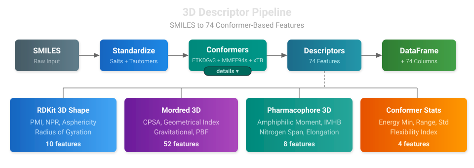

3D Molecular Descriptors: Shape, Surface, and Pharmacophore Features
Combine 2D + 3D
Run both the 2D descriptor endpoint and the 3D endpoint, then concatenate the results for a ~388-feature set covering topological, electronic, and geometric properties.
2D molecular descriptors capture a lot about a molecule's chemistry from its connectivity graph alone -- molecular weight, hydrogen bond donors, topological polar surface area, and hundreds of other properties. But some of the most important ADMET properties depend on the molecule's shape in three dimensions: how it fits into a transporter binding site, whether it can fold to mask polar groups for membrane permeation, or how its charge distribution maps onto its surface.
Workbench's 3D descriptor endpoints compute 74 conformer-based features from SMILES strings, covering molecular shape, charged partial surface area, pharmacophore spatial distribution, and conformational flexibility. Two pipeline modes are available -- a fast endpoint for realtime inference and a Boltzmann endpoint for high-quality batch processing. Both produce the same 74 features so downstream models can consume either interchangeably.
Why 3D Descriptors?
2D descriptors treat molecules as graphs -- atoms are nodes, bonds are edges. This misses geometry-dependent properties that matter for ADMET:
- Membrane permeability depends on molecular shape and the spatial separation of polar and nonpolar regions (amphiphilic moment)
- Transporter interactions (P-gp, BCRP) correlate with molecular elongation, nitrogen spatial distribution, and overall size
- Protein-ligand binding depends on 3D shape complementarity, not just functional group counts
- Intramolecular hydrogen bonds enable "chameleonic" behavior where molecules mask polar groups in nonpolar environments -- a purely 3D phenomenon
These properties can't be captured from the molecular graph. You need 3D coordinates.
Two Pipeline Modes: Fast and Boltzmann
Workbench provides two 3D descriptor endpoints that share the same computation core but differ in conformer sampling depth:
| Fast | Boltzmann | |
|---|---|---|
| Endpoint | smiles-to-3d-descriptors-v1 | smiles-to-3d-boltzmann-v1 |
| Conformers | 10 (fixed) | 50-300 (adaptive by rotatable bonds) |
| Aggregation | Boltzmann-weighted ensemble | Boltzmann-weighted ensemble |
| Deployment | Realtime SageMaker endpoint | Async SageMaker endpoint (scale-to-zero) |
| Use case | Synchronous inference from training pipelines | Overnight batch processing (10k-100k compounds) |
| Output | 74 features + 10 diagnostic columns | 74 features + 10 diagnostic columns |
Both modes use Boltzmann-weighted ensemble averaging -- descriptors are computed on every conformer within a 5 kcal/mol energy window of the MMFF minimum, then combined using normalized Boltzmann weights (w_i = exp(-ΔE_i / kT)). This is more reproducible than single-conformer descriptors, which can vary significantly with random seed, especially for flexible molecules. The MARCEL benchmark and Nikonenko et al. have shown that ensemble approaches produce more stable QSAR models.
Adaptive Conformer Counts (Boltzmann Mode)
The Boltzmann endpoint uses the datamol-style tiering that has become the community standard for conformer generation:
| Rotatable Bonds | Conformers | Rationale |
|---|---|---|
| < 8 | 50 | Low flexibility, few distinct conformers |
| 8-12 | 200 | Moderate flexibility, needs broader sampling |
| > 12 | 300 | High flexibility, large conformational space |
This ensures adequate sampling of the conformational landscape without wasting compute on rigid molecules.
The Computation Pipeline
The 3D descriptor endpoint runs a multi-step pipeline for each molecule:

Step 1: Standardization
The same standardization pipeline used by the 2D endpoints runs first -- salt extraction, charge neutralization, and tautomer canonicalization. This ensures the 3D descriptors are computed on the same canonical structure as the 2D descriptors.
Step 2: Conformer Generation
Generating realistic 3D coordinates from a SMILES string is the most computationally intensive step. Workbench uses RDKit's ETKDGv3 (Experimental Torsion Knowledge Distance Geometry v3), which biases conformer sampling toward torsion angles observed in crystal structures -- appropriate for the condensed-phase geometries relevant to ADMET.
The algorithm uses a three-tier embedding strategy to maximize success rates across diverse chemical structures:
| Tier | Strategy | When It's Needed |
|---|---|---|
| 1. Standard ETKDGv3 | Experimental torsion preferences + small ring handling | Works for ~95% of drug-like molecules |
| 2. Random Coordinates | Random initial positions instead of distance matrix eigenvalues | Molecules where distance bounds are hard to satisfy |
| 3. Relaxed Constraints | Random coordinates + relaxed flat-ring enforcement | Strained bridged polycyclics, unusual ring topologies |
All conformers are optimized with the MMFF94s force field (preferred over MMFF94 for its improved handling of planar nitrogen centers common in drug molecules), using optimizerForceTol=0.0135 which provides a ~20% speedup with negligible geometry loss. For molecules with unsupported MMFF atom types, the pipeline automatically falls back to UFF (Universal Force Field).
RMSD-based pruning (pruneRmsThresh=0.5) removes redundant geometries -- rigid molecules like benzene naturally collapse to 1-2 unique conformers, while flexible chains retain more diversity.
Step 3: Boltzmann-Weighted Descriptor Calculation
All 74 descriptors are computed on the molecule with explicit hydrogens preserved throughout. This is important -- MMFF94s energy calculations, Mordred CPSA partial charges, and mass-weighted shape descriptors all require explicit Hs for correct results.
For each conformer within the 5 kcal/mol energy window, shape, surface, and pharmacophore descriptors are computed independently and then combined via Boltzmann-weighted averaging. Conformer ensemble statistics (energy range, flexibility index) are computed over the full generated ensemble, not just the window.
Descriptor Categories
RDKit 3D Shape Descriptors (10 features)
These capture the overall molecular shape using the inertia tensor:
| Descriptor | What It Captures |
|---|---|
| PMI1, PMI2, PMI3 | Principal moments of inertia -- raw shape information |
| NPR1, NPR2 | Normalized PMI ratios -- classify molecules as rod-like, disc-like, or spherical on the PMI triangle plot |
| Asphericity | How far from spherical (0 = sphere, higher = elongated) |
| Eccentricity | Shape elongation (0 = sphere, 1 = linear) |
| Inertial Shape Factor | Ratio of smallest to largest PMI -- flat vs compact |
| Radius of Gyration | Overall molecular size (mass-weighted spread from center) |
| Spherocity Index | How spherical the molecule is (1 = perfect sphere) |
The NPR1/NPR2 triangle plot is a widely used visualization for molecular shape classification: rod-shaped molecules cluster near (0, 1), disc-shaped near (0.5, 0.5), and spherical near (1, 1). Landrum's RDKit blog has shown that these PMI-derived descriptors are among the most conformer-sensitive, which is precisely why Boltzmann-weighted averaging improves their reproducibility.
Mordred 3D Descriptors (52 features)
Mordred's 3D modules compute surface-area-based descriptors that capture how charge, polarity, and hydrophobicity distribute across the molecular surface:
- CPSA (43 descriptors): Charged Partial Surface Area -- the 3D extension of topological polar surface area. Maps partial charges onto the solvent-accessible surface to capture electrostatic features that govern solvation, permeability, and protein binding.
- Geometrical Index (4): Petitjean shape indices measuring molecular topology in 3D space.
- Gravitational Index (4): Mass-weighted distance descriptors.
- PBF (1): Plane of Best Fit -- measures molecular planarity, relevant for membrane intercalation and crystal packing.
Pharmacophore 3D Descriptors (8 features)
Custom descriptors capturing the spatial distribution of pharmacophoric features:
| Descriptor | ADMET Relevance |
|---|---|
| Molecular Axis Length | Maximum heavy-atom distance -- P-gp substrates are typically 25-30 Å long |
| Molecular Volume | Convex hull volume -- binding site fit, transporter size constraints |
| Amphiphilic Moment | Polar/nonpolar centroid separation -- membrane orientation, transporter recognition |
| Charge Centroid Distance | Distance from center of mass to basic nitrogen centroid -- binding orientation |
| Nitrogen Span | Max distance between any two nitrogens -- multi-point binding |
| HBA Centroid Distance | H-bond acceptor spatial distribution -- solubility, permeability |
| IMHB Potential | Intramolecular H-bond potential -- chameleonic permeability (polar group masking) |
| Elongation | Axis length / volume^(1/3) -- shape anisotropy |
The intramolecular hydrogen bond potential (IMHB) deserves special mention. Molecules that can form intramolecular H-bonds can "mask" their polar groups in nonpolar membrane environments, dramatically increasing permeability despite high polar surface area. This chameleonic behavior is a key design strategy in modern medicinal chemistry and is invisible to 2D descriptors.
Conformer Ensemble Statistics (4 features)
Statistics computed over the full generated conformer ensemble that capture conformational flexibility:
- Energy minimum: The lowest MMFF94s/UFF energy -- a proxy for strain
- Energy range / standard deviation: How spread out the conformer energies are
- Conformational flexibility index: Normalized energy range -- higher values indicate more conformational freedom
Highly flexible molecules tend to have larger energy ranges and higher flexibility indices. These features correlate with permeability (flexible molecules pay higher entropic penalties for binding) and metabolic stability.
Diagnostic Columns
In addition to the 74 model features, both endpoints produce 10 desc3d_* diagnostic columns that track pipeline status, conformer generation quality, and compute time. These are prefixed to distinguish them from model inputs:
| Column | Description |
|---|---|
desc3d_status |
ok, skip:parse, skip:heavy_atoms, skip:rot_bonds, etc. |
desc3d_mode |
fast or boltzmann |
desc3d_conf_count |
Conformers after RMSD pruning |
desc3d_confs_requested |
Target conformer count |
desc3d_confs_in_window |
Conformers in the Boltzmann energy window |
desc3d_embed_failures |
Distance geometry retry count |
desc3d_timeout_failures |
Per-conformer RDKit timeout count |
desc3d_embed_tier |
Which embedding tier succeeded (1/2/3) |
desc3d_force_field |
MMFF94s, UFF, or none |
desc3d_compute_time_s |
Per-molecule wall clock |
Production Guardrails
The 3D endpoints are significantly more compute-intensive than 2D. Several safeguards keep them reliable:
Molecular Complexity Check
Before attempting conformer generation, molecules are screened against size and topology thresholds that catch molecules too large or complex for reliable conformer generation:
| Property | Threshold | Rationale |
|---|---|---|
| Heavy atoms | > 100 | Embedding time scales roughly O(n^2) |
| Rotatable bonds | > 30 | Combinatorial explosion of conformer space |
| Ring systems | > 10 | Extreme ring counts indicate cage structures |
| Ring complexity score | > 15 | Backstop for highly constrained polycyclic cages |
The ring complexity score (rings + bridgehead atoms + spiro atoms) is a permissive backstop -- common drug scaffolds score well under 15.
Molecules exceeding any threshold receive NaN features and a specific desc3d_status explaining the skip reason. These guards can be disabled for local analysis (complexity_check=False).
Deploying the Endpoints
Fast Endpoint (Realtime)
# Realtime instance (recommended for 3D)
SERVERLESS=false python feature_endpoints/rdkit_3d_v1.py
# Serverless (lower cost, but slower)
python feature_endpoints/rdkit_3d_v1.py
Boltzmann Endpoint (Async)
The Boltzmann endpoint deploys as an AsyncEndpoint with scale-to-zero -- the instance spins down when idle and cold-starts on the next request. This is ideal for overnight batch runs where you don't want to pay for idle compute during the day.
Using the Endpoints
from workbench.api import Endpoint, AsyncEndpoint
# Fast endpoint — synchronous, for realtime inference
end_fast = Endpoint("smiles-to-3d-descriptors-v1")
df_3d = end_fast.inference(df)
# Boltzmann endpoint — async, for batch processing
end_boltz = AsyncEndpoint("smiles-to-3d-boltzmann-v1")
df_3d_boltz = end_boltz.inference(df)
# Both work with InferenceCache for persistent S3-backed caching
from workbench.api.inference_cache import InferenceCache
cached_endpoint = InferenceCache(end_fast, cache_key_column="smiles")
df_cached = cached_endpoint.inference(big_df) # Only computes uncached rows
References
Conformer Ensemble Methods
- Zhu, J., Xia, Y., Wu, L., et al. "Learning Over Molecular Conformer Ensembles: Datasets and Benchmarks." ICLR 2024. arXiv: 2310.00115
- Nikonenko, A., Zankov, D., Baskin, I., et al. "Multiple Conformer Descriptors for QSAR Modeling." Mol. Inform. 40, 2060030 (2021). DOI: 10.1002/minf.202060030
- Hamakawa, Y. & Miyao, T. "Understanding Conformation Importance in Data-Driven Property Prediction Models." J. Chem. Inf. Model. 65, 3388-3404 (2025). DOI: 10.1021/acs.jcim.5c00018
- Adams, K. & Coley, C.W. "The Impact of Conformer Quality on Learned Representations of Molecular Conformer Ensembles." arXiv (2025). arXiv: 2502.13220
Conformer Generation
- Riniker, S. & Landrum, G.A. "Better Informed Distance Geometry: Using What We Know To Improve Conformation Generation." J. Chem. Inf. Model. 55, 2562-2574 (2015). DOI: 10.1021/acs.jcim.5b00654
- Wang, S., Witek, J., Landrum, G.A. & Riniker, S. "Improving Conformer Generation for Small Rings and Macrocycles Based on Distance Geometry and Experimental Torsional-Angle Preferences." J. Chem. Inf. Model. 60, 2044-2058 (2020). DOI: 10.1021/acs.jcim.0c00025
- Landrum, G. "Optimizing conformer generation parameters." RDKit Blog (2022). Blog post
- Landrum, G. "Variability of PMI Descriptors." RDKit Blog (2022). Blog post
- Landrum, G. "Understanding conformer generation failures." RDKit Blog (2023). Blog post
- Landrum, G. "Scaling conformer generation." RDKit Blog (2025). Blog post
- Datamol conformer generation with adaptive tiering. Documentation
Force Fields
- Tosco, P., Stiefl, N. & Landrum, G. "Bringing the MMFF force field to the RDKit: implementation and validation." J. Cheminform. 6, 37 (2014). DOI: 10.1186/s13321-014-0037-3
Descriptors
- RDKit 3D Descriptors: Documentation
- Mordred Community: GitHub
- Stanton, D.T. & Jurs, P.C. "Development and Use of Charged Partial Surface Area Structural Descriptors in Computer-Assisted Quantitative Structure-Property Relationship Studies." Anal. Chem. 62, 2323-2329 (1990). DOI: 10.1021/ac00220a013
ADMET and Chameleonic Molecules
- Whitty, A., et al. "Quantifying the chameleonic properties of macrocycles and other high-molecular-weight drugs." Drug Discov. Today 21, 712-717 (2016). DOI: 10.1016/j.drudis.2016.02.005
Questions?

The SuperCowPowers team is happy to answer any questions you may have about AWS and Workbench. Please contact us at workbench@supercowpowers.com or on chat us up on Discord